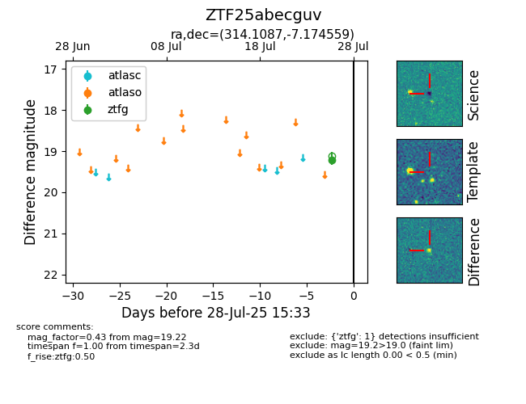

Target ZTF25abecguv at 2025-07-28 15:33, see:
FINK: fink-portal.org/ZTF25abecguv
Lasair: lasair-ztf.lsst.ac.uk/objects/ZTF25abecguv
ALeRCE: alerce.online/object/ZTF25abecguv
alt names
ZTF25abecguv (ztf,fink)
coordinates:
equatorial (ra, dec) = (314.1087,-7.17456)
galactic (l, b) = (41.2187,-30.99922)
photometry
last ztfg=19.22
1 ztfg detections
